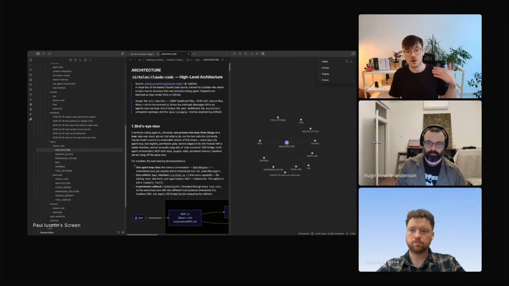

research
Classifies intent, then queries the wiki or ingests new sources, deduping and extending what's already there. The compounding core, vibe coded and then versioned.
 PAUL IUSZTIN
DECODING AI
RESEARCH SKILL
SECOND BRAIN
8 TERMINALS
PAUL IUSZTIN
DECODING AI
RESEARCH SKILL
SECOND BRAIN
8 TERMINALS
Paul builds a second brain that writes with him. A personalized, LLM-curated wiki over his own sources, Obsidian notes, Readwise highlights, GitHub repos, that compounds across every research run, then feeds a pipeline that drafts pieces for Decoding AI, his AI magazine, in his voice. He keeps the argument, the order, and the final edits; the agents gather, distill, plan, and draft. Leave them too much room and the generic AI voice pops out, so he trains the system on the diff between his edits and the draft, like a loss function for his own skills.

"You shouldn't fight LLMs. You should find new ways to get into some symbiosis with them."
Paul built a custom knowledge base modeled on Karpathy's LLM Knowledge Base, on top of his own second brain. The research skill is the single entry point: it classifies what he is asking for, then queries what he already has or ingests something new. Each run deduplicates against and extends what came before, so research compounds across sessions instead of being thrown away after one answer.
It mines sources he trusts, an Obsidian vault, Readwise highlights, NotebookLM collections, GitHub repos, and keeps a wiki layer over them: per-source pages, entities, concepts, comparisons, open questions, and contradictions, each linked back to the raw source. His running example is coding-agent architecture: he ingested Claude Code, OpenCode, and Pi to read their memory, permission, and sandbox systems side by side.

"If you leave them too much interpretation and gaps, the LLM and AI voice immediately pops out."
Classifies intent, then queries the wiki or ingests new sources, deduping and extending what's already there. The compounding core, vibe coded and then versioned.
Pulls only the ideas that match the article sketch and compiles them into a small research packet, so the writing agent never sees the whole wiki.
Inspects the wiki for repeated or clashing ideas, and pulls more out of the research base when a topic is still thin.
Renders visualizations over the research base. Shown briefly: the capability he's explored least so far.
Turns his outline and the queryable wiki into a machine-readable plan: metadata, sections, point of view, theory-to-practice ratios.
Compiles the guideline into a prose draft in his voice, calling his writing tools through an MCP server and plugin marketplace.
Diffs his edited article against the agent's draft and proposes updates to his writing profiles, so the system tracks his current taste.
"It's similar to a loss function: this is how I want it to look, and this is the bad version. Do a diff between them and find what signal I can use to improve my skills instead of the model's weight."